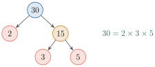
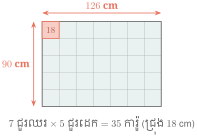
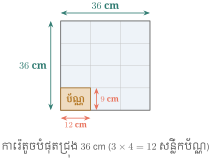

វត្ថុបំណង
- កំណត់បានមួយចំនួនគត់ចែកដាច់នឹង 2, 3, 4, 5, 8, 9
- បំបែកចំនួនមិនបឋមជាផលគុណកត្តាបឋម
- រកតួចែករួមធំបំផុតនិងពហុគុណរួមតូចបំផុត
- អនុវត្តតួចែករួមធំបំផុតនិងពហុគុណរួមតូចបំផុតក្នុងការដោះស្រាយចំណោទ ។
1. លក្ខណៈចែកដាច់នៃចំនួនគត់
1.1. ភាពចែកដាច់នឹង 2 នឹង 5
ឧទាហរណ៍ 1 ៖ \(\displaystyle 42\div 2=21\), \(\displaystyle 56\div 2=28\), \(\displaystyle 198\div 2=99\), \(\displaystyle 210\div 2=105\) ។
ឧទាហរណ៍ 2 ៖ \(\displaystyle 70\div 5=14\), \(\displaystyle 95\div 5=19\), \(\displaystyle 160\div 5=32\), \(\displaystyle 525\div 5=105\) ។
តាមឧទាហរណ៍ខាងលើ គេសង្កេតឃើញថា មួយចំនួនចែកដាច់នឹង \(\displaystyle 2\) កាលណាវាមានលេខខាងចុងជាលេខគូ ហើយមួយចំនួនចែកដាច់នឹង \(\displaystyle 5\) កាលណាវាមានលេខខាងចុង \(\displaystyle 0\) ឬ \(\displaystyle 5\) ។
ជាទូទៅ
- មួយចំនួនគត់ចែកដាច់នឹង \(\displaystyle 2\) កាលណាវាជាចំនួនគត់គូ ។
- មួយចំនួនគត់ចែកដាច់នឹង \(\displaystyle 5\) កាលណានៅខ្ទង់រាយមានលេខ \(\displaystyle 0\) ឬ \(\displaystyle 5\) ។
គេឱ្យផលបូក \(\displaystyle 9018+1457\), \(\displaystyle 1995+1329\) ។ ដោយមិនធ្វើវិធីចែក ចូរប្រាប់ផលបូកដែល៖ ក. ចែកដាច់នឹង \(\displaystyle 5\) ខ. ចែកដាច់នឹង \(\displaystyle 2\) ។
ក. \(\displaystyle 9018+1457=10475\) ចែកដាច់នឹង \(\displaystyle 5\) ព្រោះផលបូកមានលេខខាងចុង \(\displaystyle 5\) ។ ខ. \(\displaystyle 1995+1329=3324\) ចែកដាច់នឹង \(\displaystyle 2\) ព្រោះផលបូកជាចំនួនគត់គូ ។
គេឱ្យចំនួនដែលមានលេខបួនខ្ទង់ \(\displaystyle 154\square\) ។ បំពេញលេខក្នុងប្រអប់ដើម្បីឱ្យបានចំនួនដែលចែកដាច់នឹង \(\displaystyle 2\) ផង និង \(\displaystyle 5\) ផង ។
មើលចម្លើយ
តាមលក្ខណៈចែកដាច់ ៖
- មួយចំនួនចែកដាច់នឹង \(\displaystyle 2\) កាលណាខ្ទង់រាយជាលេខគូ (\(\displaystyle 0, 2, 4, 6, 8\)) ។
- មួយចំនួនចែកដាច់នឹង \(\displaystyle 5\) កាលណាខ្ទង់រាយជាលេខ \(\displaystyle 0\) ឬ \(\displaystyle 5\) ។
ដើម្បីឱ្យចំនួន \(\displaystyle 154\square\) ចែកដាច់នឹង \(\displaystyle 2\) ផង និង \(\displaystyle 5\) ផង នោះខ្ទង់រាយ \(\displaystyle \square\) ត្រូវតែជាលេខរួម គឺលេខ \(\displaystyle 0\) ។
ដូចនេះ លេខក្នុងប្រអប់គឺ \(\displaystyle 0\) ហើយចំនួនដែលទទួលបានគឺ \(\displaystyle 1540\) ។
1.2. ភាពចែកដាច់នឹង 3 នឹង 9
ឧទាហរណ៍ 1 ៖ \(\displaystyle 195\div 3=65\), \(\displaystyle 927\div 3=309\), \(\displaystyle 1005\div 3=335\) ។ គេសង្កេតឃើញថា
- \(\displaystyle 195\) ចែកដាច់នឹង \(\displaystyle 3\) ហើយផលបូកលេខតាមខ្ទង់គឺ \(\displaystyle 1+9+5=15\) ចែកដាច់នឹង \(\displaystyle 3\) ។
- \(\displaystyle 927\) ចែកដាច់នឹង \(\displaystyle 3\) ហើយផលបូកលេខតាមខ្ទង់គឺ \(\displaystyle 9+2+7=18\) ចែកដាច់នឹង \(\displaystyle 3\) ។
- \(\displaystyle 1005\) ចែកដាច់នឹង \(\displaystyle 3\) ហើយផលបូកលេខតាមខ្ទង់គឺ \(\displaystyle 1+0+0+5=6\) ចែកដាច់នឹង \(\displaystyle 3\) ។
ឧទាហរណ៍ 2 ៖ \(\displaystyle 216\div 9=24\), \(\displaystyle 828\div 9=92\), \(\displaystyle 2106\div 9=234\) ។ គេសង្កេតឃើញថា
- \(\displaystyle 216\) ចែកដាច់នឹង \(\displaystyle 9\) ហើយផលបូកលេខតាមខ្ទង់គឺ \(\displaystyle 2+1+6=9\) ចែកដាច់នឹង \(\displaystyle 9\) ។
- \(\displaystyle 828\) ចែកដាច់នឹង \(\displaystyle 9\) ហើយផលបូកលេខតាមខ្ទង់គឺ \(\displaystyle 8+2+8=18\) ចែកដាច់នឹង \(\displaystyle 9\) ។
- \(\displaystyle 2106\) ចែកដាច់នឹង \(\displaystyle 9\) ហើយផលបូកលេខតាមខ្ទង់គឺ \(\displaystyle 2+1+0+6=9\) ចែកដាច់នឹង \(\displaystyle 9\) ។
ជាទូទៅ
- មួយចំនួនចែកដាច់នឹង \(\displaystyle 3\) កាលណាផលបូកលេខតាមខ្ទង់នៃចំនួននោះចែកដាច់នឹង \(\displaystyle 3\) ។
- មួយចំនួនចែកដាច់នឹង \(\displaystyle 9\) កាលណាផលបូកលេខតាមខ្ទង់នៃចំនួននោះចែកដាច់នឹង \(\displaystyle 9\) ។
គេឱ្យចំនួនមានលេខបួនខ្ទង់ \(\displaystyle 200\square\) ។ បំពេញលេខក្នុងប្រអប់ដើម្បីឱ្យបានចែកដាច់នឹង \(\displaystyle 3\) ផង និង \(\displaystyle 9\) ផង ។
ផលបូកលេខ \(\displaystyle 2+0+0+7=9\) ចែកដាច់នឹង \(\displaystyle 3\) ផង និង \(\displaystyle 9\) ផង ដូច្នេះលេខក្នុងប្រអប់គឺលេខ \(\displaystyle 7\), គឺ \(\displaystyle 2007\) ។
គេមានមួយចំនួនដែលមានលេខបីខ្ទង់ \(\displaystyle 73\square\) ។ បំពេញលេខក្នុងប្រអប់ដើម្បីឱ្យចំនួននោះចែកដាច់នឹង \(\displaystyle 3\) ផង នឹង \(\displaystyle 9\) ផង ។
មើលចម្លើយ
តាមលក្ខណៈចែកដាច់ មួយចំនួនចែកដាច់នឹង \(\displaystyle 9\) កាលណាផលបូកលេខតាមខ្ទង់ចែកដាច់នឹង \(\displaystyle 9\) (ហើយបើចែកដាច់នឹង \(\displaystyle 9\) វាក៏ចែកដាច់នឹង \(\displaystyle 3\) ដែរ) ។
ផលបូកលេខតាមខ្ទង់នៃ \(\displaystyle 73\square\) គឺ ៖
ដោយ \(\displaystyle \square\) ជាលេខមួយខ្ទង់ (\(\displaystyle 0 \le \square \le 9\)) នោះ \(\displaystyle 10 \le 10 + \square \le 19\) ។
ពហុគុណនៃ \(\displaystyle 9\) នៅចន្លោះពី \(\displaystyle 10\) ដល់ \(\displaystyle 19\) គឺ \(\displaystyle 18\) ៖
ដូចនេះ លេខក្នុងប្រអប់គឺ \(\displaystyle 8\) ហើយចំនួននោះគឺ \(\displaystyle 738\) ។
1.3. ភាពចែកដាច់នឹង 4 នឹង 8
ឧទាហរណ៍ 1 ៖ \(\displaystyle 124\div 4=31\), \(\displaystyle 832\div 4=208\), \(\displaystyle 1000\div 4=250\) ។ គេសង្កេតឃើញថា
- \(\displaystyle 124\) ចែកដាច់នឹង \(\displaystyle 4\) ហើយ \(\displaystyle 24\) ចែកដាច់នឹង \(\displaystyle 4\) ។
- \(\displaystyle 832\) ចែកដាច់នឹង \(\displaystyle 4\) ហើយ \(\displaystyle 32\) ចែកដាច់នឹង \(\displaystyle 4\) ។
- \(\displaystyle 1000\) ចែកដាច់នឹង \(\displaystyle 4\) ហើយ \(\displaystyle 00\) ចែកដាច់នឹង \(\displaystyle 4\) ។
ឧទាហរណ៍ 2 ៖ \(\displaystyle 3128\div 8 = 391\), \(\displaystyle 5048\div 8 = 631\), \(\displaystyle 7120\div 8=890\) ។ គេសង្កេតឃើញថា
- \(\displaystyle 3128\) ចែកដាច់នឹង \(\displaystyle 8\) ហើយ \(\displaystyle 128\) ចែកដាច់នឹង \(\displaystyle 8\) ។
- \(\displaystyle 5048\) ចែកដាច់នឹង \(\displaystyle 8\) ហើយ \(\displaystyle 048\) ចែកដាច់នឹង \(\displaystyle 8\) ។
- \(\displaystyle 7120\) ចែកដាច់នឹង \(\displaystyle 8\) ហើយ \(\displaystyle 120\) ចែកដាច់នឹង \(\displaystyle 8\) ។
ជាទូទៅ
- មួយចំនួនចែកដាច់នឹង \(\displaystyle 4\) កាលណាវាមានលេខខាងចុងពីរខ្ទង់ចែកដាច់នឹង \(\displaystyle 4\) ។
- មួយចំនួនចែកដាច់នឹង \(\displaystyle 8\) កាលណាវាមានលេខខាងចុងបីខ្ទង់ចែកដាច់នឹង \(\displaystyle 8\) ។
គេឱ្យចំនួនមានលេខ 6 ខ្ទង់ \(\displaystyle 11223\square\) ។ ចូរបំពេញលេខក្នុងប្រអប់ដើម្បីឱ្យចំនួននោះចែកដាច់នឹង \(\displaystyle 4\) ផង និង \(\displaystyle 8\) ផង ។
\(\displaystyle 112232\) ចែកដាច់នឹង \(\displaystyle 4\) ព្រោះ \(\displaystyle 32\) ចែកដាច់នឹង \(\displaystyle 4\) ហើយចែកដាច់នឹង \(\displaystyle 8\) ព្រោះ \(\displaystyle 232\) ចែកដាច់នឹង \(\displaystyle 8\) ។ ដូច្នេះលេខក្នុងប្រអប់គឺលេខ \(\displaystyle 2\), គឺ \(\displaystyle 112232\) ។
ពីឆ្នាំ \(\displaystyle 1999\) ដល់ឆ្នាំ \(\displaystyle 2010\) តើឆ្នាំណាខ្លះចែកដាច់នឹង \(\displaystyle 4\) ផង នឹង \(\displaystyle 8\) ផង ។
\(\displaystyle 2000\) ចែកដាច់នឹង \(\displaystyle 4\) ព្រោះ \(\displaystyle 00\) ចែកដាច់នឹង \(\displaystyle 4\) ហើយចែកដាច់នឹង \(\displaystyle 8\) ព្រោះ \(\displaystyle 000\) ចែកដាច់នឹង \(\displaystyle 8\) ។ \(\displaystyle 2008\) ចែកដាច់នឹង \(\displaystyle 4\) ព្រោះ \(\displaystyle 08\) ចែកដាច់នឹង \(\displaystyle 4\) ហើយចែកដាច់នឹង \(\displaystyle 8\) ព្រោះ \(\displaystyle 008\) ចែកដាច់នឹង \(\displaystyle 8\) ។ ដូច្នេះចំនួនតំណាងឆ្នាំ \(\displaystyle 2000\) និង \(\displaystyle 2008\) ចែកដាច់នឹង \(\displaystyle 4\) ផងនិង \(\displaystyle 8\) ផង ។
គេមានមួយចំនួនដែលមានលេខប្រាំខ្ទង់ \(\displaystyle 734\square 0\) ។ បំពេញលេខក្នុងប្រអប់ដើម្បីឱ្យចំនួននោះ៖ ក. ចែកដាច់នឹង \(\displaystyle 4\) ខ. ចែកដាច់នឹង \(\displaystyle 8\) ។
មើលចម្លើយ
- ក.
ចែកដាច់នឹង \(\displaystyle 4\) ៖
តាមលក្ខណៈចែកដាច់ មួយចំនួនចែកដាច់នឹង \(\displaystyle 4\) កាលណាពីរខ្ទង់ចុងក្រោយចែកដាច់នឹង \(\displaystyle 4\) ។
ពីរខ្ទង់ចុងក្រោយនៃ \(\displaystyle 734\square 0\) គឺ \(\displaystyle \square 0\) ។ ក្នុងចំណោមលេខពី \(\displaystyle 0\) ដល់ \(\displaystyle 9\) លេខដែលអាចធ្វើឱ្យ \(\displaystyle \square 0\) ចែកដាច់នឹង \(\displaystyle 4\) រួមមាន ៖
- \(\displaystyle 00 \div 4 = 0\) (ចែកដាច់) \(\displaystyle \implies \square = 0\)
- \(\displaystyle 20 \div 4 = 5\) (ចែកដាច់) \(\displaystyle \implies \square = 2\)
- \(\displaystyle 40 \div 4 = 10\) (ចែកដាច់) \(\displaystyle \implies \square = 4\)
- \(\displaystyle 60 \div 4 = 15\) (ចែកដាច់) \(\displaystyle \implies \square = 6\)
- \(\displaystyle 80 \div 4 = 20\) (ចែកដាច់) \(\displaystyle \implies \square = 8\)
ដូចនេះ លេខក្នុងប្រអប់អាចជា ៖ \(\displaystyle 0, 2, 4, 6, 8\) ។
- ខ.
ចែកដាច់នឹង \(\displaystyle 8\) ៖
តាមលក្ខណៈចែកដាច់ មួយចំនួនចែកដាច់នឹង \(\displaystyle 8\) កាលណាបីខ្ទង់ចុងក្រោយចែកដាច់នឹង \(\displaystyle 8\) ។
បីខ្ទង់ចុងក្រោយនៃ \(\displaystyle 734\square 0\) គឺ \(\displaystyle 4\square 0\) ។ យើងពិនិត្យបណ្តាលេខគូដែលរកឃើញខាងលើ ៖
- បើ \(\displaystyle \square = 0\) ៖ \(\displaystyle 400 \div 8 = 50\) (ចែកដាច់)
- បើ \(\displaystyle \square = 2\) ៖ \(\displaystyle 420 \div 8 = 52.5\) (ចែកមិនដាច់)
- បើ \(\displaystyle \square = 4\) ៖ \(\displaystyle 440 \div 8 = 55\) (ចែកដាច់)
- បើ \(\displaystyle \square = 6\) ៖ \(\displaystyle 460 \div 8 = 57.5\) (ចែកមិនដាច់)
- បើ \(\displaystyle \square = 8\) ៖ \(\displaystyle 480 \div 8 = 60\) (ចែកដាច់)
ដូចនេះ លេខក្នុងប្រអប់អាចជា ៖ \(\displaystyle 0, 4, 8\) ។
1.4. លក្ខណៈចែកដាច់នៃផលបូកនិងផលដក
ឧទាហរណ៍ ៖ គេមាន \(\displaystyle 512\) ចែកដាច់នឹង \(\displaystyle 2\) និង \(\displaystyle 326\) ចែកដាច់នឹង \(\displaystyle 2\) ។ គេសង្កេតឃើញថា \(\displaystyle 512 + 326 = 838\) គឺចែកដាច់នឹង \(\displaystyle 2\) ហើយ \(\displaystyle 512-326 = 186\) ក៏ចែកដាច់នឹង \(\displaystyle 2\) ដែរ ។
ជាទូទៅ បើតួនីមួយៗនៃផលបូកឬផលដក ចែកដាច់នឹងចំនួនតែមួយដូចគ្នា នោះផលបូកឬផលដករបស់វាក៏ចែកដាច់នឹងចំនួននោះដែរ ។
គេមានបីចំនួនគឺ \(\displaystyle a, a+1, a+2\) (\(\displaystyle a\) ជាចំនួនគត់) ។ បង្ហាញថាផលបូកបីចំនួននេះចែកដាច់នឹង \(\displaystyle 3\) ។
គេបាន \(\displaystyle a+a+1+a+2 = 3a+3\) ។ ដោយ \(\displaystyle 3a\) ចែកដាច់នឹង \(\displaystyle 3\) ហើយ \(\displaystyle 3\) ចែកដាច់នឹង \(\displaystyle 3\) នោះ \(\displaystyle 3a+3\) ចែកដាច់នឹង \(\displaystyle 3\) ។
បំពេញលេខក្នុងប្រអប់ដើម្បីឱ្យផលបូកនិងផលដកចែកដាច់នឹង \(\displaystyle 9\) ក. \(\displaystyle 3\square 0+16\square\) ខ. \(\displaystyle 40\square - 2\square 0\)
មើលចម្លើយ
តាមលក្ខណៈចែកដាច់នៃផលបូកនិងផលដក បើតួនីមួយៗចែកដាច់នឹង \(\displaystyle 9\) នោះផលបូកឬផលដករបស់វាក៏ចែកដាច់នឹង \(\displaystyle 9\) ដែរ ។
- ក.
ចំពោះ \(\displaystyle 3\square 0 + 16\square\) ៖
- តួទីមួយ \(\displaystyle 3\square 0\) ៖ ផលបូកលេខតាមខ្ទង់គឺ \(\displaystyle 3 + \square + 0 = 3 + \square\) ។ ដើម្បីឱ្យចែកដាច់នឹង \(\displaystyle 9\) គេបាន \(\displaystyle 3 + \square = 9 \implies \square = 6\) (បានចំនួន \(\displaystyle 360\)) ។
- តួទីពីរ \(\displaystyle 16\square\) ៖ ផលបូកលេខតាមខ្ទង់គឺ \(\displaystyle 1 + 6 + \square = 7 + \square\) ។ ដើម្បីឱ្យចែកដាច់នឹង \(\displaystyle 9\) គេបាន \(\displaystyle 7 + \square = 9 \implies \square = 2\) (បានចំនួន \(\displaystyle 162\)) ។
ដូចនេះ ផលបូកគឺ \(\displaystyle 360 + 162 = 522\) ដែលចែកដាច់នឹង \(\displaystyle 9\) ។
- ខ.
ចំពោះ \(\displaystyle 40\square - 2\square 0\) ៖
- តួទីមួយ \(\displaystyle 40\square\) ៖ ផលបូកលេខតាមខ្ទង់គឺ \(\displaystyle 4 + 0 + \square = 4 + \square\) ។ ដើម្បីឱ្យចែកដាច់នឹង \(\displaystyle 9\) គេបាន \(\displaystyle 4 + \square = 9 \implies \square = 5\) (បានចំនួន \(\displaystyle 405\)) ។
- តួទីពីរ \(\displaystyle 2\square 0\) ៖ ផលបូកលេខតាមខ្ទង់គឺ \(\displaystyle 2 + \square + 0 = 2 + \square\) ។ ដើម្បីឱ្យចែកដាច់នឹង \(\displaystyle 9\) គេបាន \(\displaystyle 2 + \square = 9 \implies \square = 7\) (បានចំនួន \(\displaystyle 270\)) ។
ដូចនេះ ផលដកគឺ \(\displaystyle 405 - 270 = 135\) ដែលចែកដាច់នឹង \(\displaystyle 9\) ។
2. តួចែកនិងពហុគុណ
ឧទាហរណ៍ 1 ៖ \(\displaystyle 18\) ចែកដាច់នឹង \(\displaystyle 1, 2, 3, 6, 9\) និង \(\displaystyle 18\) ។ គេបាន \(\displaystyle 18=1\times 18\), \(\displaystyle 18=2\times 9\), \(\displaystyle 18=3\times 6\), \(\displaystyle 18=6\times 3\), \(\displaystyle 18=9\times 2\), \(\displaystyle 18=18\times 1\) ។ ដូច្នេះ \(\displaystyle 1, 2, 3, 6, 9\) និង \(\displaystyle 18\) ហៅថាតួចែកនៃ \(\displaystyle 18\) ហើយ \(\displaystyle 18\) ជាពហុគុណនៃ \(\displaystyle 1, 2, 3, 6, 9\) និង \(\displaystyle 18\) ។
ឧទាហរណ៍ 2 ៖ តួចែកនៃ \(\displaystyle 100\) គឺ \(\displaystyle 1, 2, 4, 5, 10, 20, 25, 50\) និង \(\displaystyle 100\) ហើយ \(\displaystyle 100\) ជាពហុគុណនៃ \(\displaystyle 1, 2, 4, 5, 10, 20, 25, 50\) និង \(\displaystyle 100\) ។
សម្គាល់ ៖ គ្រប់ចំនួនមានតួចែកនឹង \(\displaystyle 1\) និងខ្លួនឯងជានិច្ច ។
គេមានចំនួន \(\displaystyle 12, 16, 28, 32, 41, 96, 104, 126, 144\) ។ ក. តើ \(\displaystyle 8\) ជាតួចែកនៃចំនួនណាខ្លះ? ខ. តើចំនួនណាខ្លះជាពហុគុណនៃ \(\displaystyle 16\) ?
ក. \(\displaystyle 8\) ជាតួចែកនៃចំនួន \(\displaystyle 16, 32, 96, 104\) និង \(\displaystyle 144\) ។ ខ. ពហុគុណនៃ \(\displaystyle 16\) គឺ \(\displaystyle 16, 32, 96, 144\) ។
ក. គេមានចំនួន \(\displaystyle 26, 30, 48, 66, 106\) ។ តើចំនួនណាខ្លះជាពហុគុណនៃ \(\displaystyle 6\) ? ខ. រកគ្រប់ចំនួនដែលជាតួចែកនៃ \(\displaystyle 15, 24, 68\) និង \(\displaystyle 120\) ។
មើលចម្លើយ
- ក.
ចំនួនដែលជាពហុគុណនៃ \(\displaystyle 6\) គឺជាចំនួនដែលចែកដាច់នឹង \(\displaystyle 6\) ៖
- \(\displaystyle 26 \div 6 = 4.33...\) (ចែកមិនដាច់)
- \(\displaystyle 30 \div 6 = 5\) (ចែកដាច់) \(\displaystyle \implies 30\) ជាពហុគុណនៃ \(\displaystyle 6\)
- \(\displaystyle 48 \div 6 = 8\) (ចែកដាច់) \(\displaystyle \implies 48\) ជាពហុគុណនៃ \(\displaystyle 6\)
- \(\displaystyle 66 \div 6 = 11\) (ចែកដាច់) \(\displaystyle \implies 66\) ជាពហុគុណនៃ \(\displaystyle 6\)
- \(\displaystyle 106 \div 6 = 17.66...\) (ចែកមិនដាច់)
ដូចនេះ ចំនួនដែលជាពហុគុណនៃ \(\displaystyle 6\) គឺ ៖ \(\displaystyle 30, 48, 66\) ។
- ខ.
រកគ្រប់តួចែកនៃចំនួននីមួយៗ ៖
- តួចែកនៃ \(\displaystyle 15\) គឺ ៖ \(\displaystyle 1, 3, 5, 15\)
- តួចែកនៃ \(\displaystyle 24\) គឺ ៖ \(\displaystyle 1, 2, 3, 4, 6, 8, 12, 24\)
- តួចែកនៃ \(\displaystyle 68\) គឺ ៖ \(\displaystyle 1, 2, 4, 17, 34, 68\)
- តួចែកនៃ \(\displaystyle 120\) គឺ ៖ \(\displaystyle 1, 2, 3, 4, 5, 6, 8, 10, 12, 15, 20, 24, 30, 40, 60, 120\) ។
3. ចំនួនបឋម
ឧទាហរណ៍ ៖ តួចែកនៃ \(\displaystyle 5\) គឺ \(\displaystyle 1\) និង \(\displaystyle 5\) ។ តួចែកនៃ \(\displaystyle 14\) គឺ \(\displaystyle 1, 2, 7\) និង \(\displaystyle 14\) ។ តួចែកនៃ \(\displaystyle 15\) គឺ \(\displaystyle 1, 3, 5\) និង \(\displaystyle 15\) ។ តួចែកនៃ \(\displaystyle 23\) គឺ \(\displaystyle 1\) និង \(\displaystyle 23\) ។
តាមឧទាហរណ៍ខាងលើ គេសង្កេតឃើញថា \(\displaystyle 5\) និង \(\displaystyle 23\) មានតួចែកតែពីរគត់ គឺ \(\displaystyle 1\) និងខ្លួនឯង ។ ចំនួន \(\displaystyle 5\) និង \(\displaystyle 23\) ហៅថា ចំនួនបឋម ។ ចំពោះ \(\displaystyle 14\) និង \(\displaystyle 15\) មានតួចែកច្រើនជាងពីរហៅថា ចំនួនមិនបឋម ។
ជាទូទៅ
- ចំនួនបឋមជាចំនួនគត់ដែលធំជាង \(\displaystyle 1\) និងមានតួចែកតែពីរគឺ \(\displaystyle 1\) និងខ្លួនឯង ។
- ចំនួនមិនបឋមជាចំនួនដែលមានតួចែកច្រើនជាងពីរ ។
សម្គាល់ ៖ តាមនិយមន័យខាងលើ \(\displaystyle 1\) មិនមែនជាចំនួនបឋម ហើយក៏មិនមែនជាចំនួនមិនបឋមដែរ ។
ក. រកចំនួនបឋមនៅចន្លោះ \(\displaystyle 1\) និង \(\displaystyle 20\) ។ ខ. រកចំនួនមិនបឋមដែលជាចំនួនគត់សេសនៅចន្លោះ \(\displaystyle 1\) និង \(\displaystyle 30\) ។
ក. ចំនួនបឋមនៅចន្លោះ \(\displaystyle 1\) និង \(\displaystyle 20\) គឺ \(\displaystyle 2, 3, 5, 7, 11, 13, 17, 19\) ។ ខ. ចំនួនមិនបឋមដែលជាចំនួនគត់សេសនៅចន្លោះ \(\displaystyle 1\) និង \(\displaystyle 30\) គឺ \(\displaystyle 9, 15, 21, 25, 27\) ។
រកចំនួនបឋមដែលតូចជាង \(\displaystyle 50\) ។
មើលចម្លើយ
ចំនួនបឋមគឺជាចំនួនគត់ធំជាង \(\displaystyle 1\) ដែលចែកដាច់នឹង \(\displaystyle 1\) និងខ្លួនឯងគត់ ។
ពិនិត្យបណ្តាចំនួនគត់ដែលតូចជាង \(\displaystyle 50\) យើងទទួលបានចំនួនបឋមចំនួន \(\displaystyle 15\) គឺ ៖
4. ការបំបែកមួយចំនួនជាផលគុណកត្តាបឋម
ឧទាហរណ៍ ៖ បំបែកចំនួន \(\displaystyle 30\) ជាផលគុណនៃកត្តាបឋម ។
វិធីទី 1 ៖ ចាប់ផ្តើមដោយយក \(\displaystyle 30\) ចែកនឹងចំនួនបឋមតូចបំផុត (ដែលអាចចែកដាច់) ហើយបន្តការធ្វើវិធីចែកដាច់រហូតដល់គេទទួលបានផលចែក \(\displaystyle 1\) ដូចខាងក្រោម៖
ដូច្នេះគេបាន \(\displaystyle 30 = 2\times 3\times 5\) ។ ចំនួន \(\displaystyle 2, 3\) និង \(\displaystyle 5\) ជាកត្តាបឋមនៃ \(\displaystyle 30\) ។
វិធីទី 2 ៖ ប្រើដ្យាក្រាមដើមឈើ

ដូច្នេះគេបាន \(\displaystyle 30=2\times 3\times 5\) ។
ក. បំបែកចំនួន \(\displaystyle x=180\) និង \(\displaystyle y=360\) ជាផលគុណកត្តាបឋម ។ ខ. បំបែកផលបូក \(\displaystyle x+y\) ជាផលគុណកត្តាបឋម ។
ក.
គេបាន \(\displaystyle 180=2\times 2\times 3\times 3\times 5=2^{2}\times 3^{2}\times 5\) ដូច្នេះ \(\displaystyle 360=2\times 2\times 2\times 3\times 3\times 5=2^{3}\times 3^{2}\times 5\) ។
ខ. \(\displaystyle x+y=180+360=540\)
ដូច្នេះ \(\displaystyle 540=2\times 2\times 3\times 3\times 3\times 5=2^{2}\times 3^{3}\times 5\) ។
បំបែកចំនួន \(\displaystyle 66\) និង \(\displaystyle 273\) ជាផលគុណកត្តាបឋម ។
មើលចម្លើយ
ធ្វើវិធីចែកជាបន្តបន្ទាប់នឹងបណ្តាកត្តាបឋម ៖
ចំពោះ \(\displaystyle 66\) ៖
\[\begin{array}{r|l} 66 & 2 \\ 33 & 3 \\ 11 & 11 \\ 1 & \end{array}\]គេបាន ៖ \(\displaystyle 66 = 2 \times 3 \times 11\) ។
ចំពោះ \(\displaystyle 273\) ៖
\[\begin{array}{r|l} 273 & 3 \\ 91 & 7 \\ 13 & 13 \\ 1 & \end{array}\]គេបាន ៖ \(\displaystyle 273 = 3 \times 7 \times 13\) ។
ដូចនេះ \(\displaystyle 66 = 2 \times 3 \times 11\) និង \(\displaystyle 273 = 3 \times 7 \times 13\) ។
5. តួចែករួមធំបំផុត (GCD)
ឧទាហរណ៍ 1 ៖ រកតួចែករួមធំបំផុតនៃ \(\displaystyle 30\) និង \(\displaystyle 36\) ។ តួចែកនៃ \(\displaystyle 30\) គឺ \(\displaystyle 1, 2, 3, 5, 6, 10, 15\) និង \(\displaystyle 30\) ។ តួចែកនៃ \(\displaystyle 36\) គឺ \(\displaystyle 1, 2, 3, 4, 6, 9, 12, 18\) និង \(\displaystyle 36\) ។ តួចែករួមនៃ \(\displaystyle 30\) និង \(\displaystyle 36\) គឺ \(\displaystyle 1, 2, 3\) និង \(\displaystyle 6\) ។ តួចែករួមធំបំផុតនៃ \(\displaystyle 30\) និង \(\displaystyle 36\) គឺ \(\displaystyle 6\) ។ តួចែករួមធំបំផុតនៃចំនួនទាំងពីរនេះតាងដោយ \(\displaystyle GCD(30,36)=6\) ។
គេអាចធ្វើតាមវិធីម្យ៉ាងទៀតដោយបំបែក \(\displaystyle 30\) និង \(\displaystyle 36\) ជាផលគុណកត្តាបឋមដូចខាងក្រោម៖
កត្តារួមដែលមាននិទស្សន្តតូចជាងគេគឺ \(\displaystyle 2\) និង \(\displaystyle 3\) ដូច្នេះ \(\displaystyle GCD(30,36)=2\times 3=6\) ។
ឧទាហរណ៍ 2 ៖ រកតួចែករួមធំបំផុតនៃ \(\displaystyle 60, 180\) និង \(\displaystyle 210\) ។
កត្តារួមដែលមាននិទស្សន្តតូចជាងគេគឺ \(\displaystyle 2\times 3 \times 5\) ដូច្នេះ \(\displaystyle GCD(60,180,210)=2\times 3\times 5=30\) ។
ជាទូទៅ ដើម្បីរកតួចែករួមធំបំផុតនៃពីរ ឬច្រើនចំនួន គេបំបែកចំនួននីមួយៗជាផលគុណកត្តាបឋម រួចគេគុណកត្តារួមទាំងអស់ដែលមាននិទស្សន្តតូចជាងគេ ។
សម្គាល់ ៖ ពីរចំនួនបឋមរវាងគ្នាកាលណា GCD របស់វាស្មើនឹង \(\displaystyle 1\) ។
ឧទាហរណ៍ 3 ៖ ចំនួន \(\displaystyle 11\) និង \(\displaystyle 13\) ជាចំនួនបឋមរវាងគ្នាព្រោះ \(\displaystyle GCD(11,13)=1\) ។
គេចង់ក្រាលឥដ្ឋការ៉ូរាងការ៉េមានទំហំប៉ុនៗគ្នាឱ្យពេញលើផ្ទៃនៃបន្ទប់ទឹកមួយរាងចតុកោណកែងដែលមានទទឹងប្រវែង \(\displaystyle 90 \text{ cm}\) និងបណ្តោយប្រវែង \(\displaystyle 126 \text{ cm}\) ។ បើគេចង់ក្រាលឥដ្ឋការ៉ូដែលមានផ្ទៃធំបំផុត តើគេត្រូវប្រើឥដ្ឋការ៉ូប៉ុន្មាន? មានជ្រុងប្រវែងប៉ុន្មាន?
កាលណាគេចែកចតុកោណកែងមួយទៅជាការ៉េមានទំហំប៉ុនៗគ្នា នោះប្រវែងជ្រុងរបស់ការ៉េមួយជាតួចែករួមនៃប្រវែងបណ្តោយនិងប្រវែងទទឹងនៃចតុកោណកែងនោះ ។ ដើម្បីឱ្យការ៉េមានប្រវែងជ្រុងធំបំផុតត្រូវមានជ្រុងស្មើតួចែករួមធំបំផុត GCD នៃប្រវែងបណ្តោយនិងទទឹងនៃចតុកោណនោះ ។

ដោយ \(\displaystyle \begin{cases} 90=2\times 3^{2}\times 5 \\ 126=2\times 3^{2}\times 7 \end{cases}\) គេបាន \(\displaystyle GCD(90,126)=2\times 3^{2}=18\) ដូច្នេះឥដ្ឋការ៉ូដែលគេត្រូវប្រើមានជ្រុងប្រវែង \(\displaystyle 18 \text{ cm}\) ហើយចំនួនការ៉ូ \(\displaystyle 5\times 7=35\) ។
គេចែកសៀវភៅ \(\displaystyle 24\) ក្បាលនិងខ្មៅដៃ \(\displaystyle 36\) ដើមឱ្យសិស្សស្មើៗគ្នាដោយគ្មានឱ្យសល់សៀវភៅឬខ្មៅដៃ ។ គេសម្រេចចិត្តចែកសៀវភៅនិងខ្មៅដៃឱ្យសិស្សបានចំនួនច្រើននាក់បំផុត ។ តើគេអាចចែកឱ្យសិស្សបានប៉ុន្មាននាក់?
មើលចម្លើយ
តាង \(\displaystyle n\) ជាចំនួនសិស្សច្រើននាក់បំផុតដែលអាចចែកឱ្យបាន (\(\displaystyle n \in \mathbb{N}^*\)) ។
ដើម្បីចែកសៀវភៅ \(\displaystyle 24\) ក្បាល និងខ្មៅដៃ \(\displaystyle 36\) ដើមឱ្យស្មើៗគ្នាដោយគ្មាននៅសល់ នោះ \(\displaystyle n\) ត្រូវតែជាតួចែករួមនៃ \(\displaystyle 24\) និង \(\displaystyle 36\) ។ ដោយគេចង់ចែកឱ្យសិស្សបានចំនួនច្រើននាក់បំផុត នោះ \(\displaystyle n\) ត្រូវតែជាតួចែករួមធំបំផុត ៖
បំបែកចំនួនទាំងពីរជាផលគុណកត្តាបឋម ៖
កត្តារួមដែលមាននិទស្សន្តតូចជាងគេគឺ \(\displaystyle 2^2\) និង \(\displaystyle 3\) ៖
ដូចនេះ គេអាចចែកសៀវភៅនិងខ្មៅដៃឱ្យសិស្សបានចំនួនច្រើនបំផុត \(\displaystyle 12\) នាក់ (សិស្សម្នាក់ៗទទួលបានសៀវភៅ \(\displaystyle 2\) ក្បាល និងខ្មៅដៃ \(\displaystyle 3\) ដើម) ។
6. ពហុគុណរួមតូចបំផុត (LCM)
ឧទាហរណ៍ 1 ៖ រកពហុគុណរួមតូចបំផុតនៃ \(\displaystyle 6\) និង \(\displaystyle 8\) ។ ពហុគុណនៃ \(\displaystyle 6\) គឺ \(\displaystyle 6, 12, 18, 24, 30, 36, 42, 48, \dots\) ពហុគុណនៃ \(\displaystyle 8\) គឺ \(\displaystyle 8, 16, 24, 32, 40, 48, 56, \dots\) ពហុគុណនៃ \(\displaystyle 6\) និង \(\displaystyle 8\) គឺ \(\displaystyle 24, 48, \dots\) ពហុគុណរួមតូចបំផុតនៃ \(\displaystyle 6\) និង \(\displaystyle 8\) គឺ \(\displaystyle 24\) ។ គេកំណត់ពហុគុណរួមតូចបំផុតនៃ \(\displaystyle 6\) និង \(\displaystyle 8\) ដោយ \(\displaystyle LCM(6,8)=24\) ។
គេអាចរកពហុគុណរួមតូចបំផុតតាមវិធីងាយដូចខាងក្រោម៖
ដូច្នេះ \(\displaystyle LCM(6,8) = 2^{3}\times 3 = 24\) ។
ឧទាហរណ៍ 2 ៖ រកពហុគុណរួមតូចបំផុតនៃ \(\displaystyle 18, 24\) និង \(\displaystyle 36\) ។
ដូច្នេះ \(\displaystyle LCM (18, 24, 36) = 2^3 \times 3^2 = 8 \times 9 = 72\) ។
ជាទូទៅ ដើម្បីរកពហុគុណរួមតូចបំផុតនៃពីរ ឬច្រើនចំនួនគេត្រូវបំបែកចំនួននីមួយៗជាផលគុណកត្តាបឋម រួចគេគុណកត្តារួមដែលមាននិទស្សន្តធំជាងគេជាមួយនិងកត្តាមិនរួម ដែលមាននៅក្នុងចំនួនទាំងនោះ ។
គេរៀបសន្លឹកប័ណ្ណតូចៗជារាងចតុកោណកែងមានបណ្តោយប្រវែង \(\displaystyle 12 \text{ cm}\) និងទទឹង \(\displaystyle 9 \text{ cm}\) តាមទិសដៅដូចគ្នាដើម្បីបង្កើតបានការ៉េមួយ ។ រកប្រវែងជ្រុងនៃការ៉េតូចបំផុតដែលគេអាចបង្កើតបាន ។

ប្រវែងជ្រុងមួយនៃការ៉េដែលបានបង្កើតដោយរៀបសន្លឹកប័ណ្ណតូចៗរាងចតុកោណកែងតាមទិសដៅដូចគ្នាជាពហុគុណរួមតូចបំផុតនៃប្រវែងបណ្តោយនិងទទឹងរបស់ចតុកោណកែង ។ ដើម្បីបានជ្រុងការ៉េមានប្រវែងខ្លីបំផុត គេត្រូវរកពហុគុណរួមតូចបំផុតនៃ \(\displaystyle 9\) និង \(\displaystyle 12\) ។
ដូច្នេះ \(\displaystyle LCM(9, 12) = 2^{2}\times 3^{2}=4\times 9=36\) ។ ដូច្នេះការ៉េតូចបំផុតដែលអាចបង្កើតបានមានជ្រុងប្រវែង \(\displaystyle 36 \text{ cm}\) ។
\(\displaystyle x\) ជាចំនួនមួយមានលេខពីរខ្ទង់ ។ \(\displaystyle 58\) ចែកនឹង \(\displaystyle x\) នៅសល់សំណល់ \(\displaystyle 2\) និង \(\displaystyle 73\) ចែកនឹង \(\displaystyle x\) នៅសល់សំណល់ \(\displaystyle 3\) ហើយ \(\displaystyle 85\) ចែកនឹង \(\displaystyle x\) នៅសល់សំណល់ \(\displaystyle 1\) ។ រកចំនួន \(\displaystyle x\) នោះ ។
មើលចម្លើយ
តាមលក្ខណៈនៃវិធីចែកមានសំណល់ ៖
- \(\displaystyle 58\) ចែកនឹង \(\displaystyle x\) សល់សំណល់ \(\displaystyle 2 \implies 58 - 2 = 56\) ចែកដាច់នឹង \(\displaystyle x\)
- \(\displaystyle 73\) ចែកនឹង \(\displaystyle x\) សល់សំណល់ \(\displaystyle 3 \implies 73 - 3 = 70\) ចែកដាច់នឹង \(\displaystyle x\)
- \(\displaystyle 85\) ចែកនឹង \(\displaystyle x\) សល់សំណល់ \(\displaystyle 1 \implies 85 - 1 = 84\) ចែកដាច់នឹង \(\displaystyle x\)
ជាងនេះទៅទៀត តួចែក \(\displaystyle x\) ត្រូវតែធំជាងសំណល់ទាំងអស់ គឺ \(\displaystyle x > 3\) ។
ដូច្នេះ \(\displaystyle x\) គឺជាតួចែករួមនៃ \(\displaystyle 56, 70\) និង \(\displaystyle 84\) ដែលមានពីរខ្ទង់ (\(\displaystyle 10 \le x \le 99\)) ។
បំបែកចំនួនទាំងបីជាផលគុណកត្តាបឋម ៖
តួចែករួមធំបំផុតគឺ ៖
តួចែករួមនៃ \(\displaystyle 56, 70\) និង \(\displaystyle 84\) គឺជាតួចែកនៃ \(\displaystyle 14\) រួមមាន ៖ \(\displaystyle 1, 2, 7, 14\) ។
ដោយ \(\displaystyle x\) ជាចំនួនមានលេខពីរខ្ទង់ គេទាញបាន ៖
ដូចនេះ ចំនួនដែលត្រូវរកគឺ \(\displaystyle x = 14\) ។
លំហាត់
បញ្ជាក់ថា
- ក. ផលបូក \(\displaystyle 78 + 120\) ចែកដាច់នឹង \(\displaystyle 2\)
- ខ. ផលដក \(\displaystyle 4140 - 720\) ចែកដាច់នឹង \(\displaystyle 3\) ។
- គ. ផលបូក \(\displaystyle 165 + 270\) ចែកដាច់នឹង \(\displaystyle 5\)
- ឃ. ផលដក \(\displaystyle 5130 - 342\) ចែកដាច់នឹង \(\displaystyle 9\) ។
មើលដំណោះស្រាយ
- ក.
ផលបូក \(\displaystyle 78 + 120\) ចែកដាច់នឹង \(\displaystyle 2\) ៖
វិធីទី 1 (តាមលក្ខណៈចែកដាច់) ៖
- \(\displaystyle 78\) មានខ្ទង់រាយជាលេខគូ (\(\displaystyle 8\)) នាំឱ្យ \(\displaystyle 78\) ចែកដាច់នឹង \(\displaystyle 2\) ។
- \(\displaystyle 120\) មានខ្ទង់រាយជាលេខគូ (\(\displaystyle 0\)) នាំឱ្យ \(\displaystyle 120\) ចែកដាច់នឹង \(\displaystyle 2\) ។
ដោយតួនីមួយៗនៃផលបូកចែកដាច់នឹង \(\displaystyle 2\) នោះផលបូក \(\displaystyle 78 + 120\) ចែកដាច់នឹង \(\displaystyle 2\) ។
វិធីទី 2 (គណនាផ្ទាល់) ៖ \(\displaystyle 78 + 120 = 198\) ដែលជាចំនួនគត់គូ (ខ្ទង់រាយជាលេខ \(\displaystyle 8\)) ដូចនេះ \(\displaystyle 198\) ចែកដាច់នឹង \(\displaystyle 2\) (\(\displaystyle 198 \div 2 = 99\)) ។
- ខ.
ផលដក \(\displaystyle 4140 - 720\) ចែកដាច់នឹង \(\displaystyle 3\) ៖
វិធីទី 1 (តាមលក្ខណៈចែកដាច់) ៖
- ផលបូកលេខតាមខ្ទង់នៃ \(\displaystyle 4140\) គឺ \(\displaystyle 4 + 1 + 4 + 0 = 9\) ចែកដាច់នឹង \(\displaystyle 3\) នាំឱ្យ \(\displaystyle 4140\) ចែកដាច់នឹង \(\displaystyle 3\) ។
- ផលបូកលេខតាមខ្ទង់នៃ \(\displaystyle 720\) គឺ \(\displaystyle 7 + 2 + 0 = 9\) ចែកដាច់នឹង \(\displaystyle 3\) នាំឱ្យ \(\displaystyle 720\) ចែកដាច់នឹង \(\displaystyle 3\) ។
ដោយតួនីមួយៗនៃផលដកចែកដាច់នឹង \(\displaystyle 3\) នោះផលដក \(\displaystyle 4140 - 720\) ចែកដាច់នឹង \(\displaystyle 3\) ។
វិធីទី 2 (គណនាផ្ទាល់) ៖ \(\displaystyle 4140 - 720 = 3420\) ។ ផលបូកលេខតាមខ្ទង់គឺ \(\displaystyle 3 + 4 + 2 + 0 = 9\) ចែកដាច់នឹង \(\displaystyle 3\) ដូចនេះ \(\displaystyle 3420\) ចែកដាច់នឹង \(\displaystyle 3\) (\(\displaystyle 3420 \div 3 = 1140\)) ។
- គ.
ផលបូក \(\displaystyle 165 + 270\) ចែកដាច់នឹង \(\displaystyle 5\) ៖
វិធីទី 1 (តាមលក្ខណៈចែកដាច់) ៖
- \(\displaystyle 165\) មានខ្ទង់រាយជាលេខ \(\displaystyle 5\) នាំឱ្យ \(\displaystyle 165\) ចែកដាច់នឹង \(\displaystyle 5\) ។
- \(\displaystyle 270\) មានខ្ទង់រាយជាលេខ \(\displaystyle 0\) នាំឱ្យ \(\displaystyle 270\) ចែកដាច់នឹង \(\displaystyle 5\) ។
ដោយតួនីមួយៗនៃផលបូកចែកដាច់នឹង \(\displaystyle 5\) នោះផលបូក \(\displaystyle 165 + 270\) ចែកដាច់នឹង \(\displaystyle 5\) ។
វិធីទី 2 (គណនាផ្ទាល់) ៖ \(\displaystyle 165 + 270 = 435\) មានខ្ទង់រាយជាលេខ \(\displaystyle 5\) ដូចនេះចែកដាច់នឹង \(\displaystyle 5\) (\(\displaystyle 435 \div 5 = 87\)) ។
- ឃ.
ផលដក \(\displaystyle 5130 - 342\) ចែកដាច់នឹង \(\displaystyle 9\) ៖
វិធីទី 1 (តាមលក្ខណៈចែកដាច់) ៖
- ផលបូកលេខតាមខ្ទង់នៃ \(\displaystyle 5130\) គឺ \(\displaystyle 5 + 1 + 3 + 0 = 9\) ចែកដាច់នឹង \(\displaystyle 9\) នាំឱ្យ \(\displaystyle 5130\) ចែកដាច់នឹង \(\displaystyle 9\) ។
- ផលបូកលេខតាមខ្ទង់នៃ \(\displaystyle 342\) គឺ \(\displaystyle 3 + 4 + 2 = 9\) ចែកដាច់នឹង \(\displaystyle 9\) នាំឱ្យ \(\displaystyle 342\) ចែកដាច់នឹង \(\displaystyle 9\) ។
ដោយតួនីមួយៗនៃផលដកចែកដាច់នឹង \(\displaystyle 9\) នោះផលដក \(\displaystyle 5130 - 342\) ចែកដាច់នឹង \(\displaystyle 9\) ។
វិធីទី 2 (គណនាផ្ទាល់) ៖ \(\displaystyle 5130 - 342 = 4788\) ។ ផលបូកលេខតាមខ្ទង់គឺ \(\displaystyle 4 + 7 + 8 + 8 = 27\) ចែកដាច់នឹង \(\displaystyle 9\) (\(\displaystyle 27 \div 9 = 3\)) ដូចនេះ \(\displaystyle 4788\) ចែកដាច់នឹង \(\displaystyle 9\) (\(\displaystyle 4788 \div 9 = 532\)) ។
គេមានមួយចំនួនមានលេខប្រាំខ្ទង់ \(\displaystyle 734\square 0\) ។ បំពេញលេខក្នុងប្រអប់ ដើម្បីឱ្យចំនួននោះចែកដាច់ ៖
- ក. នឹង \(\displaystyle 2\) ផង និង \(\displaystyle 5\) ផង
- ខ. នឹង \(\displaystyle 3\) ផង នឹង \(\displaystyle 9\) ផង ។
មើលដំណោះស្រាយ
- ក.
ចែកដាច់នឹង \(\displaystyle 2\) ផង និង \(\displaystyle 5\) ផង ៖
ចំនួន \(\displaystyle 734\square 0\) មានខ្ទង់រាយជាលេខ \(\displaystyle 0\) រួចជាស្រេច ៖
- ដោយខ្ទង់រាយជាលេខ \(\displaystyle 0\) (លេខគូ) នោះចំនួននេះចែកដាច់នឹង \(\displaystyle 2\) ជានិច្ច ។
- ដោយខ្ទង់រាយជាលេខ \(\displaystyle 0\) នោះចំនួននេះក៏ចែកដាច់នឹង \(\displaystyle 5\) ជានិច្ចដែរ ។
ដូចនេះ គ្រប់លេខក្នុងប្រអប់ \(\displaystyle \square \in \{0, 1, 2, 3, 4, 5, 6, 7, 8, 9\}\) សុទ្ធតែធ្វើឱ្យចំនួន \(\displaystyle 734\square 0\) ចែកដាច់នឹង \(\displaystyle 2\) ផង និង \(\displaystyle 5\) ផង ។
- ខ.
ចែកដាច់នឹង \(\displaystyle 3\) ផង នឹង \(\displaystyle 9\) ផង ៖
មួយចំនួនចែកដាច់នឹង \(\displaystyle 9\) កាលណាផលបូកលេខតាមខ្ទង់ចែកដាច់នឹង \(\displaystyle 9\) (ហើយបើចែកដាច់នឹង \(\displaystyle 9\) វាក៏ចែកដាច់នឹង \(\displaystyle 3\) ដែរ) ។
ផលបូកលេខតាមខ្ទង់នៃ \(\displaystyle 734\square 0\) គឺ ៖
\[S = 7 + 3 + 4 + \square + 0 = 14 + \square\]ដោយ \(\displaystyle \square\) ជាលេខមួយខ្ទង់ (\(\displaystyle 0 \le \square \le 9\)) នោះ \(\displaystyle 14 \le 14 + \square \le 23\) ។
ពហុគុណនៃ \(\displaystyle 9\) នៅចន្លោះ \(\displaystyle 14\) ដល់ \(\displaystyle 23\) មានតែ \(\displaystyle 18\) មួយគត់ ៖
\[14 + \square = 18 \implies \square = 18 - 14 = 4\]ដូចនេះ លេខក្នុងប្រអប់គឺលេខ \(\displaystyle 4\) ហើយចំនួននោះគឺ \(\displaystyle 73440\) ។
គេមានចំនួន \(\displaystyle 660, 540, 645\) និង \(\displaystyle 610\) ។ តើចំនួនណាខ្លះជាពហុគុណនៃ \(\displaystyle 30\) ?
មើលដំណោះស្រាយ
ដើម្បីឱ្យមួយចំនួនជាពហុគុណនៃ \(\displaystyle 30\) ចំនួននោះត្រូវតែចែកដាច់នឹង \(\displaystyle 30\) (ពោលគឺចែកដាច់នឹង \(\displaystyle 10\) ផង និងចែកដាច់នឹង \(\displaystyle 3\) ផង) ៖
- \(\displaystyle 660 \div 30 = 22\) (ចែកដាច់) \(\displaystyle \implies 660\) ជាពហុគុណនៃ \(\displaystyle 30\)
- \(\displaystyle 540 \div 30 = 18\) (ចែកដាច់) \(\displaystyle \implies 540\) ជាពហុគុណនៃ \(\displaystyle 30\)
- \(\displaystyle 645\) មានខ្ទង់រាយជាលេខ \(\displaystyle 5\) (មិនចែកដាច់នឹង \(\displaystyle 10\)) \(\displaystyle \implies 645\) មិនមែនជាពហុគុណនៃ \(\displaystyle 30\) ទេ
- \(\displaystyle 610\) មានផលបូកលេខតាមខ្ទង់គឺ \(\displaystyle 6 + 1 + 0 = 7\) (មិនចែកដាច់នឹង \(\displaystyle 3\)) \(\displaystyle \implies 610\) មិនមែនជាពហុគុណនៃ \(\displaystyle 30\) ទេ
ដូចនេះ ចំនួនដែលជាពហុគុណនៃ \(\displaystyle 30\) គឺ \(\displaystyle 660\) និង \(\displaystyle 540\) ។
គេមានចំនួន \(\displaystyle 11, 15, 17, 18, 19, 20, 21, 22, 23\) និង \(\displaystyle 29\) ។
- ក. រកតួចែកនៃចំនួននីមួយៗ
- ខ. តើចំនួនណាខ្លះជាចំនួនបឋម?
មើលដំណោះស្រាយ
- ក.
តួចែកនៃចំនួននីមួយៗ ៖
- តួចែកនៃ \(\displaystyle 11\) គឺ ៖ \(\displaystyle 1, 11\)
- តួចែកនៃ \(\displaystyle 15\) គឺ ៖ \(\displaystyle 1, 3, 5, 15\)
- តួចែកនៃ \(\displaystyle 17\) គឺ ៖ \(\displaystyle 1, 17\)
- តួចែកនៃ \(\displaystyle 18\) គឺ ៖ \(\displaystyle 1, 2, 3, 6, 9, 18\)
- តួចែកនៃ \(\displaystyle 19\) គឺ ៖ \(\displaystyle 1, 19\)
- តួចែកនៃ \(\displaystyle 20\) គឺ ៖ \(\displaystyle 1, 2, 4, 5, 10, 20\)
- តួចែកនៃ \(\displaystyle 21\) គឺ ៖ \(\displaystyle 1, 3, 7, 21\)
- តួចែកនៃ \(\displaystyle 22\) គឺ ៖ \(\displaystyle 1, 2, 11, 22\)
- តួចែកនៃ \(\displaystyle 23\) គឺ ៖ \(\displaystyle 1, 23\)
- តួចែកនៃ \(\displaystyle 29\) គឺ ៖ \(\displaystyle 1, 29\)
- ខ.
ចំនួនបឋម ៖
ចំនួនបឋមគឺជាចំនួនដែលមានតួចែកតែពីរគត់ គឺ \(\displaystyle 1\) និងខ្លួនឯង ។
តាមលទ្ធផលខាងលើ ចំនួនបឋមគឺ ៖ \(\displaystyle 11, 17, 19, 23, 29\) ។
បំបែកចំនួន \(\displaystyle 63, 100, 129, 225, 567, 1980, 2097, 50336\) និង \(\displaystyle 127008\) ជាផលគុណកត្តាបឋម ។
មើលដំណោះស្រាយ
ធ្វើវិធីបំបែកជាផលគុណកត្តាបឋម ៖
- \(\displaystyle 63 = 9 \times 7 = 3^2 \times 7\)
- \(\displaystyle 100 = 10^2 = 2^2 \times 5^2\)
- \(\displaystyle 129 = 3 \times 43\)
- \(\displaystyle 225 = 15^2 = (3 \times 5)^2 = 3^2 \times 5^2\)
- \(\displaystyle 567 = 9 \times 63 = 3^2 \times (3^2 \times 7) = 3^4 \times 7\)
- \(\displaystyle 1980 = 10 \times 198 = (2 \times 5) \times (2 \times 99) = 2^2 \times 3^2 \times 5 \times 11\)
- \(\displaystyle 2097 = 9 \times 233 = 3^2 \times 233\) (ដោយ \(\displaystyle 233\) ជាចំនួនបឋម)
- \(\displaystyle 50336 = 2^5 \times 1573 = 2^5 \times 11^2 \times 13\)
- \(\displaystyle 127008 = 2^5 \times 3969 = 2^5 \times 63^2 = 2^5 \times 3^4 \times 7^2\)
រកតួចែករួមធំបំផុត GCD នៃចំនួនខាងក្រោម ៖
- ក. \(\displaystyle 9\) និង \(\displaystyle 15\)
- ខ. \(\displaystyle 10\) និង \(\displaystyle 108\)
- គ. \(\displaystyle 128\) និង \(\displaystyle 324\)
- ឃ. \(\displaystyle 192, 160\) និង \(\displaystyle 96\)
- ង. \(\displaystyle 48, 72\) និង \(\displaystyle 132\)
- ច. \(\displaystyle 36, 168, 144\) និង \(\displaystyle 252\) ។
មើលដំណោះស្រាយ
ដើម្បីរក GCD គេបំបែកចំនួននីមួយៗជាផលគុណកត្តាបឋម រួចគុណកត្តារួមដែលមាននិទស្សន្តតូចជាងគេ ៖
- ក.
\(\displaystyle 9 = 3^2\) និង \(\displaystyle 15 = 3 \times 5\)
\[\implies GCD(9, 15) = 3\] - ខ.
\(\displaystyle 10 = 2 \times 5\) និង \(\displaystyle 108 = 2^2 \times 3^3\)
\[\implies GCD(10, 108) = 2\] - គ.
\(\displaystyle 128 = 2^7\) និង \(\displaystyle 324 = 2^2 \times 3^4\)
\[\implies GCD(128, 324) = 2^2 = 4\] - ឃ.
\(\displaystyle 192 = 2^6 \times 3\), \(\displaystyle 160 = 2^5 \times 5\) និង \(\displaystyle 96 = 2^5 \times 3\)
\[\implies GCD(192, 160, 96) = 2^5 = 32\] - ង.
\(\displaystyle 48 = 2^4 \times 3\), \(\displaystyle 72 = 2^3 \times 3^2\) និង \(\displaystyle 132 = 2^2 \times 3 \times 11\)
\[\implies GCD(48, 72, 132) = 2^2 \times 3 = 4 \times 3 = 12\] - ច.
\(\displaystyle 36 = 2^2 \times 3^2\), \(\displaystyle 168 = 2^3 \times 3 \times 7\), \(\displaystyle 144 = 2^4 \times 3^2\) និង \(\displaystyle 252 = 2^2 \times 3^2 \times 7\)
\[\implies GCD(36, 168, 144, 252) = 2^2 \times 3 = 4 \times 3 = 12\]
រកពហុគុណរួមតូចបំផុត (LCM) នៃចំនួនខាងក្រោម ៖
- ក. \(\displaystyle 81\) និង \(\displaystyle 225\)
- ខ. \(\displaystyle 120\) និង \(\displaystyle 35\)
- គ. \(\displaystyle 34, 420\) និង \(\displaystyle 245\)
- ឃ. \(\displaystyle 70, 21\) និង \(\displaystyle 28\)
- ង. \(\displaystyle 512, 18\) និង \(\displaystyle 20\)
- ច. \(\displaystyle 88, 220\) និង \(\displaystyle 528\) ។
មើលដំណោះស្រាយ
ដើម្បីរក LCM គេគុណកត្តារួមដែលមាននិទស្សន្តធំជាងគេជាមួយកត្តាមិនរួម ៖
- ក.
\(\displaystyle 81 = 3^4\) និង \(\displaystyle 225 = 3^2 \times 5^2\)
\[LCM(81, 225) = 3^4 \times 5^2 = 81 \times 25 = 2025\] - ខ.
\(\displaystyle 120 = 2^3 \times 3 \times 5\) និង \(\displaystyle 35 = 5 \times 7\)
\[LCM(120, 35) = 2^3 \times 3 \times 5 \times 7 = 120 \times 7 = 840\] - គ.
\(\displaystyle 34 = 2 \times 17\), \(\displaystyle 420 = 2^2 \times 3 \times 5 \times 7\) និង \(\displaystyle 245 = 5 \times 7^2\)
\[LCM(34, 420, 245) = 2^2 \times 3 \times 5 \times 7^2 \times 17 = 60 \times 49 \times 17 = 49980\] - ឃ.
\(\displaystyle 70 = 2 \times 5 \times 7\), \(\displaystyle 21 = 3 \times 7\) និង \(\displaystyle 28 = 2^2 \times 7\)
\[LCM(70, 21, 28) = 2^2 \times 3 \times 5 \times 7 = 4 \times 15 \times 7 = 420\] - ង.
\(\displaystyle 512 = 2^9\), \(\displaystyle 18 = 2 \times 3^2\) និង \(\displaystyle 20 = 2^2 \times 5\)
\[LCM(512, 18, 20) = 2^9 \times 3^2 \times 5 = 512 \times 45 = 23040\] - ច.
\(\displaystyle 88 = 2^3 \times 11\), \(\displaystyle 220 = 2^2 \times 5 \times 11\) និង \(\displaystyle 528 = 2^4 \times 3 \times 11\)
\[LCM(88, 220, 528) = 2^4 \times 3 \times 5 \times 11 = 16 \times 15 \times 11 = 2640\]
រកចំនួន \(\displaystyle x\) និង \(\displaystyle y\) ដោយដឹងថា \(\displaystyle GCD(x, y) = 12\) និង \(\displaystyle x+y=72\) ដែល \(\displaystyle 0<x<y\) ។
មើលដំណោះស្រាយ
ដោយ \(\displaystyle GCD(x, y) = 12\) យើងអាចតាង ៖
\[x = 12a \quad \text{និង} \quad y = 12b\]ដែល \(\displaystyle a\) និង \(\displaystyle b\) ជាចំនួនគត់វិជ្ជមានបឋមរវាងគ្នា (\(\displaystyle GCD(a, b) = 1\)) ហើយដោយ \(\displaystyle 0 < x < y\) នោះ \(\displaystyle 0 < a < b\) ។
ជំនួសក្នុងសមីការ \(\displaystyle x + y = 72\) ៖
\[12a + 12b = 72 \implies 12(a + b) = 72 \implies a + b = 6\]ស្វែងរកគូ \(\displaystyle (a, b)\) ដែល \(\displaystyle 0 < a < b\) និង \(\displaystyle GCD(a, b) = 1\) ៖
- បើ \(\displaystyle a = 1 \implies b = 6 - 1 = 5\) ៖ \(\displaystyle GCD(1, 5) = 1\) (ផ្ទៀងផ្ទាត់)
- បើ \(\displaystyle a = 2 \implies b = 6 - 2 = 4\) ៖ \(\displaystyle GCD(2, 4) = 2 \ne 1\) (មិនយក ព្រោះមិនបឋមរវាងគ្នា)
ដូច្នេះ យើងបានគូតែមួយគត់គឺ \(\displaystyle a = 1\) និង \(\displaystyle b = 5\) ៖
\[\begin{aligned} x &= 12 \times 1 = 12 \\ y &= 12 \times 5 = 60 \end{aligned}\]ផ្ទៀងផ្ទាត់ ៖ \(\displaystyle 12 + 60 = 72\), \(\displaystyle GCD(12, 60) = 12\) និង \(\displaystyle 0 < 12 < 60\) (ត្រឹមត្រូវ) ។
ដូចនេះ \(\displaystyle x = 12\) និង \(\displaystyle y = 60\) ។
រកចំនួន \(\displaystyle x\) ដែលតូចជាងគេបំផុតដោយដឹងថា \(\displaystyle LCM(6, x)=24\) ។
មើលដំណោះស្រាយ
បំបែកចំនួនជាផលគុណកត្តាបឋម ៖
\[\begin{aligned} 6 &= 2 \times 3 \\ 24 &= 2^3 \times 3 \end{aligned}\]តាមនិយមន័យនៃ \(\displaystyle LCM(6, x)\) ស្វ័យគុណនៃកត្តានីមួយៗយកតាមនិទស្សន្តធំជាងគេ ៖
- ក្នុង \(\displaystyle 6 = 2^1 \times 3^1\) និទស្សន្តនៃកត្តា \(\displaystyle 2\) គឺត្រឹមតែ \(\displaystyle 1\) ប៉ុណ្ណោះ ។
- ប៉ុន្តែក្នុង \(\displaystyle LCM(6, x) = 2^3 \times 3\) និទស្សន្តនៃកត្តា \(\displaystyle 2\) គឺ \(\displaystyle 3\) (\(\displaystyle 2^3\)) ។
- ដូច្នេះ កត្តា \(\displaystyle 2^3\) ត្រូវតែកើតចេញពីចំនួន \(\displaystyle x\) (ពោលគឺ \(\displaystyle x\) ត្រូវតែចែកដាច់នឹង \(\displaystyle 2^3 = 8\)) ។
ដើម្បីឱ្យ \(\displaystyle x\) ជាចំនួនតូចជាងគេបំផុត គេមិនត្រូវបន្ថែមបណ្តាកត្តាបឋមណាផ្សេងទៀតក្រៅពី \(\displaystyle 2^3\) ឡើយ ៖
\[x = 2^3 = 8\]ផ្ទៀងផ្ទាត់ ៖ \(\displaystyle LCM(6, 8) = LCM(2 \times 3, 2^3) = 2^3 \times 3 = 24\) (ត្រឹមត្រូវ) ។
ដូចនេះ ចំនួន \(\displaystyle x\) ដែលតូចជាងគេបំផុតគឺ \(\displaystyle x = 8\) ។
កញ្ញាវត្តីចង់កាត់ក្រណាត់មួយផ្ទាំងរាងចតុកោណកែងមានទទឹងប្រវែង \(\displaystyle 24 \text{ cm}\) និងបណ្តោយ \(\displaystyle 56 \text{ cm}\) ដើម្បីធ្វើកូនកន្សែងដៃរាងការ៉េប៉ុនៗគ្នាដោយមិនឱ្យសល់ចម្រៀកក្រណាត់ ។ បើនាងចង់បានកូនកន្សែងដៃដែលមានទំហំធំបំផុត ដែលអាចធ្វើបាន ។ តើជ្រុងនៃកូនកន្សែងដៃនោះមានប្រវែងប៉ុន្មាន?
មើលដំណោះស្រាយ
តាង \(\displaystyle a\) ជាប្រវែងជ្រុងនៃកូនកន្សែងដៃរាងការ៉េ (\(\displaystyle a > 0\), គិតជា \(\displaystyle \text{cm}\)) ។
ដើម្បីកាត់ក្រណាត់រាងចតុកោណកែងទំហំ \(\displaystyle 24 \text{ cm} \times 56 \text{ cm}\) ជាការ៉េប៉ុនៗគ្នាដោយគ្មានសល់ចម្រៀកក្រណាត់ នោះប្រវែងជ្រុង \(\displaystyle a\) ត្រូវតែជាតួចែករួមនៃ \(\displaystyle 24\) និង \(\displaystyle 56\) ។
ដោយនាងចង់បានកូនកន្សែងដៃដែលមានទំហំធំបំផុត (ជ្រុងការ៉េធំបំផុត) នោះ \(\displaystyle a\) ត្រូវតែជាតួចែករួមធំបំផុត (GCD) នៃ \(\displaystyle 24\) និង \(\displaystyle 56\) ៖
\[a = GCD(24, 56)\]បំបែកចំនួនទាំងពីរជាផលគុណកត្តាបឋម ៖
\[\begin{aligned} 24 &= 2^3 \times 3 \\ 56 &= 2^3 \times 7 \end{aligned}\]គេបាន ៖
\[GCD(24, 56) = 2^3 = 8\]ដូចនេះ ជ្រុងនៃកូនកន្សែងដៃនោះមានប្រវែង \(\displaystyle 8 \text{ cm}\) ។
(សម្គាល់ ៖ ចំនួនកូនកន្សែងដៃដែលកាត់បានគឺ \(\displaystyle (24 \div 8) \times (56 \div 8) = 3 \times 7 = 21\) កន្សែង) ។
នាឡិកាបីរោទិ៍ក្នុងរយៈពេលខុសគ្នា នាឡិកាទី 1 រោទិ៍រៀងរាល់ 10 នាទីម្តង នាឡិកាទី 2 រោទិ៍រៀងរាល់ 15 នាទីម្តង និងនាឡិកាទី 3 រោទិ៍រៀងរាល់ 20 នាទីម្តង ។ រករយៈពេលខ្លីបំផុតដែលនាឡិកាទាំងបីរោទិ៍ព្រមគ្នាម្តងទៀត បន្ទាប់ពីវាបានរោទិ៍ព្រមគ្នាម្តងហើយ ។
មើលដំណោះស្រាយ
តាង \(\displaystyle T\) ជារយៈពេលខ្លីបំផុតដែលនាឡិកាទាំងបីរោទិ៍ព្រមគ្នាម្តងទៀត (គិតជានាទី) ។
ដោយនាឡិកាទី 1, ទី 2 និងទី 3 រោទិ៍តាមចន្លោះពេលរៀងៗខ្លួន \(\displaystyle 10\text{ នាទី}\), \(\displaystyle 15\text{ នាទី}\) និង \(\displaystyle 20\text{ នាទី}\) នោះ \(\displaystyle T\) ត្រូវតែជាពហុគុណរួមតូចបំផុត (LCM) នៃ \(\displaystyle 10, 15\) និង \(\displaystyle 20\) ៖
\[T = LCM(10, 15, 20)\]បំបែកចំនួនទាំងបីជាផលគុណកត្តាបឋម ៖
\[\begin{aligned} 10 &= 2 \times 5 \\ 15 &= 3 \times 5 \\ 20 &= 2^2 \times 5 \end{aligned}\]គេបាន ៖
\[LCM(10, 15, 20) = 2^2 \times 3 \times 5 = 4 \times 3 \times 5 = 60\]ដូចនេះ រយៈពេលខ្លីបំផុតដែលនាឡិកាទាំងបីរោទិ៍ព្រមគ្នាម្តងទៀតគឺ \(\displaystyle 60 \text{ នាទី}\) (ឬ \(\displaystyle 1 \text{ ម៉ោង}\)) ។
ខ្លឹមសារ៖ សៀវភៅពុម្ពគណិតវិទ្យាថ្នាក់ទី៧ របស់ក្រសួងអប់រំ យុវជន និងកីឡា · វាយអត្ថបទ គូររូបភាពឡើងវិញ និងរៀបចំលើអនឡាញដោយលោកគ្រូ សាន សុខលី សម្រាប់ការសិក្សាដោយឥតគិតថ្លៃ និងមិនរកប្រាក់ចំណេញ។ មិនមែនជាការបោះពុម្ពផ្លូវការរបស់ក្រសួងទេ។